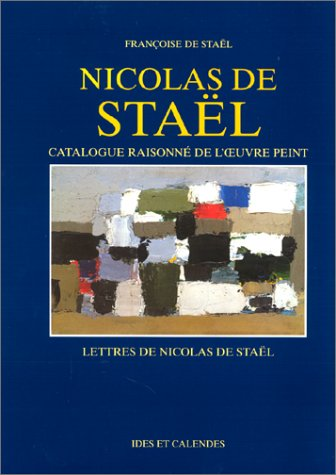
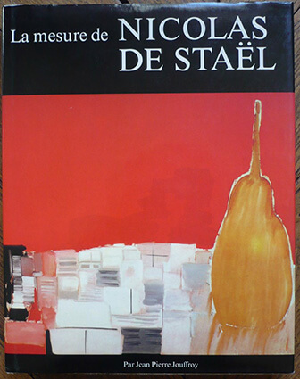
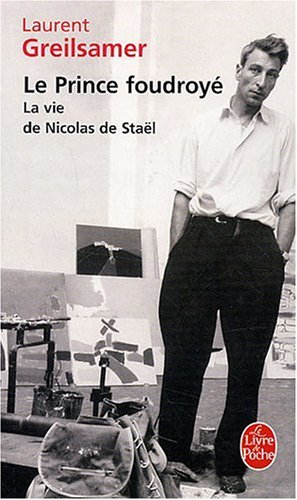
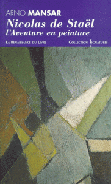
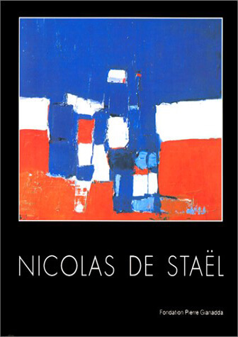

Livres

Nicolas De Stael : Catalogue raisonné de l'oeuvre peint
Françoise de Staël

La mesure de Nicolas De Stael
Jean-Pierre Jouffroy
- Ed. Ides et Calendes
- Album / 240 pages / format 25 x 32 / 127 illustrations / relié couverture illustrée
- 68 reproductions en couleurs de tableaux, 59 reproductions de dessins et de documents, et plus de 80 citations, dans les marges, de la correspondance de Nicolas de Staël. Après vingt-cinq ans où la peinture a connu des fortunes diverses, il est nécessaire de donner à Nicolas de Staël toute sa dimension.

Le prince foudroyé : La vie De Nicolas de Staël
Laurent Greilsamer
- Ed. Fayard
- Document / 335 pages / format 18 x 23 / illustrations / broché couverture illustrée
- Son unique obsession était la peinture : elle était son souffle, son sang. Quand Nicolas de Staël (1914-1955) se donna la mort, à quarante et un ans, il laissait plus de mille tableaux, autant de dessins, et l'énigme d'une vie menée au galop. Insolent et généreux, Staël savait masquer sous le rire les failles d'une enfance brisée par la révolution russe de 1917 et les rigueurs d'un exil polonais. La reconnaissance arriva des États-Unis, alors qu'il avait trente-neuf ans. Trop tôt ou trop tard : il s'était déjà réfugié en Provence, écrasé de gloire, fraternisant avec René Char, brûlant sa vie. Sa morale tenait en quelques mots : " Il faut travailler beaucoup, une tonne de passion et cent grammes de patience. " Voici la chevauchée de ce prince foudroyé.

Nicolas de Staël : L'aventure en peinture
Arno Mansar
- Ed. La Renaissance du Livre
- Document / 236 pages / format 18 x 24 / illustrations / broché couverture illustrée
- A la charnière des années cinquante, le peintre Nicolas de Staël réalisa plus de mille toiles. Cette étude retrace l'itinéraire de l'artiste, depuis sa naissance à Saint-Petersbourg en 1914 jusqu'à son suicide à Antibes en 1955, à 41 ans.

Nicolas de Staël
Jean Louis Prat
- Ed. Fondation Pierre Gianada
- Catalogue / 232 pages / format 22 x 24 / illustrations / relié couverture illustrée
- Rapidité de travail et de maturation, ou fulgurance, est la marque de cet artiste au destin hors-normes dont la carrière se brisa tragiquement au pied du Fort Vauban à Antibes en 1955. Les historiens de l’art ne cessent de relire cette œuvre à la lumière de la modernité, et Jean-Louis Prat est un de ses plus fidèles connaisseurs.